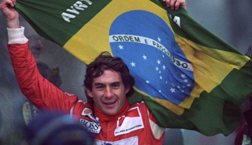
Ayrton Senna
Ayrton Senna, the Brazilian racing legend, won three Formula 1 World Championships (1988, 1990, 1991). He was renowned for his exceptional driving skills, intense rivalry with Alain Prost, and dramatic victories.
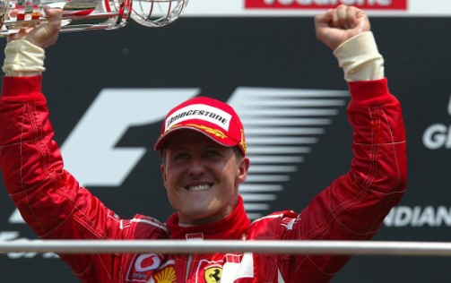
Michael Schumacher
Michael Schumacher, a seven-time Formula 1 World Champion, dominated the sport in the 1990s and early 2000s. His remarkable achievements and record-breaking wins made him one of the sport's greatest legends.
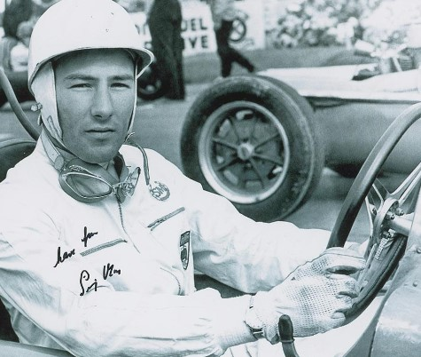
Juan Manuel Fangio
Juan Manuel Fangio, the Argentine racing icon, won five Formula 1 World Championships in the 1950s. His mastery of the sport's early years earned him the title "The Maestro" and eternal respect.
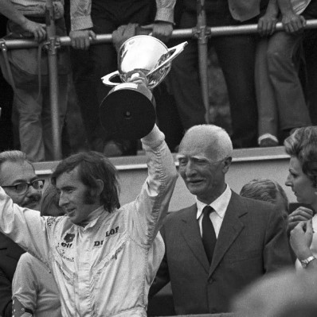
Jackie Stewart
Jackie Stewart, known as the "Flying Scot," won three Formula 1 World Championships (1969, 1971, 1973). He was an advocate for driver safety and made significant contributions to improve safety standards in the sport.
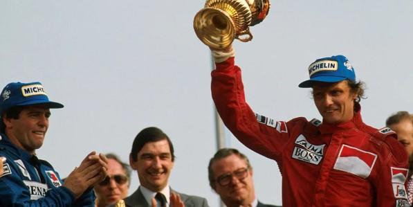
Niki Lauda
Niki Lauda, the Austrian racing legend, won three Formula 1 World Championships (1975, 1977, 1984). His incredible determination and rivalry with James Hunt in the 1976 season are etched in Formula 1 history.

Alain Prost
Alain Prost, the "Professor," secured four Formula 1 World Championships (1985, 1986, 1989, 1993). His calculated and precise driving style earned him numerous victories and a place among the sport's greats.

Nelson Piquet
Nelson Piquet, the Brazilian driver, won three Formula 1 World Championships (1981, 1983, 1987). His tactical driving and aggressive style made him a formidable competitor during the turbo era.
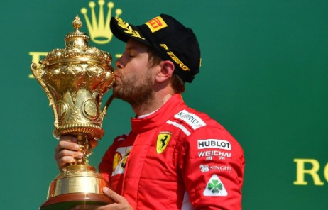
Sebastian Vettel
Sebastian Vettel, the German racer, won four consecutive Formula 1 World Championships (2010, 2011, 2012, 2013). His dominant performances with Red Bull Racing made him one of the sport's youngest quadruple champions.
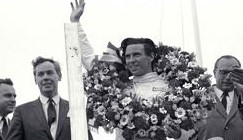
Jim Clark
Jim Clark, the Scottish racing legend, won two Formula 1 World Championships (1963, 1965). He was known for his smooth driving style and remarkable versatility across different racing disciplines.
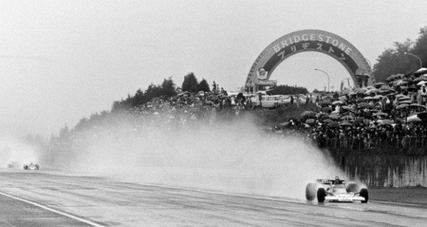
1976 Japanese Grand Prix
The 1976 Japanese Grand Prix at Fuji Speedway saw a legendary battle between James Hunt and Niki Lauda for the championship. Lauda's courageous comeback after a near-fatal accident added to the race's drama.
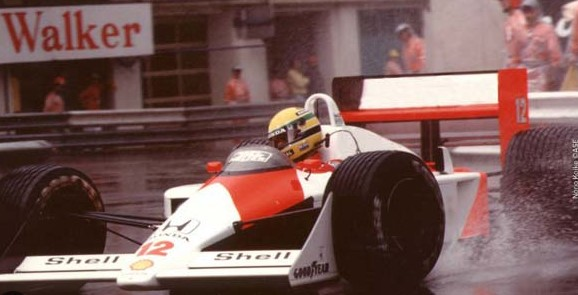
1988 Monaco Grand Prix
Ayrton Senna's incredible performance in the rain during the 1988 Monaco Grand Prix remains etched in history. His unmatched skill and focus led him to victory, lapping other drivers in treacherous conditions.
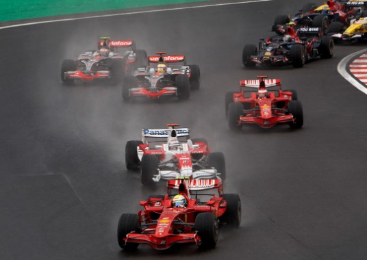
2008 Brazilian Grand Prix
The 2008 Brazilian Grand Prix provided a thrilling season finale. Lewis Hamilton clinched the championship by securing the fifth position on the last lap, making it one of the most dramatic title deciders ever.
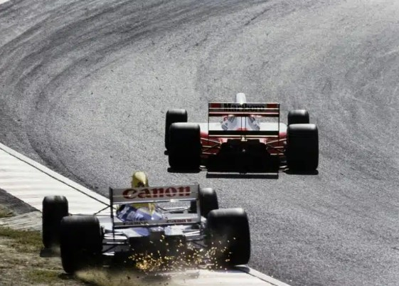
1991 Suzuka Grand Prix
The 1991 Suzuka Grand Prix witnessed a legendary battle between Ayrton Senna and Nigel Mansell. Senna showcased his exceptional wet-weather skills, and his victory in challenging conditions became an iconic moment.
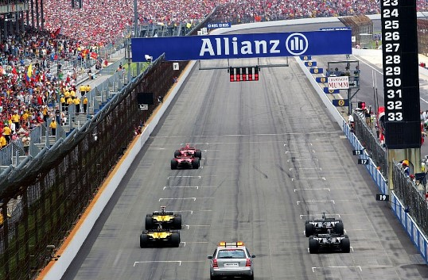
2005 United States Grand Prix
The 2005 United States Grand Prix was marked by a dramatic tire controversy, with only six cars starting the race. Michael Schumacher's extraordinary drive from the back of the grid to victory was an unforgettable moment.
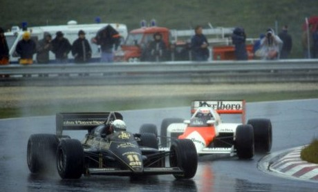
1985 Portuguese Grand Prix
The 1985 Portuguese Grand Prix saw a historic moment when Ayrton Senna overtook Alain Prost around the outside at Turn 1. This daring move showcased Senna's raw talent and determination to be the best.
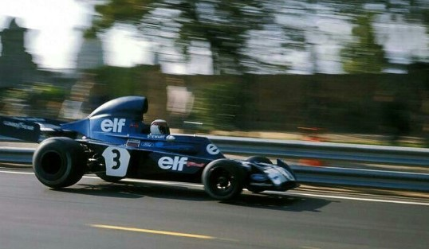
1973 Spanish Grand Prix
The 1973 Spanish Grand Prix at Montjuïc Park Circuit saw a surprise victory by Jackie Stewart in torrential rain. Stewart's masterful driving in treacherous conditions remains one of the greatest drives in F1 history.
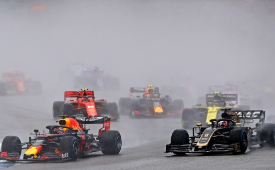
2019 German Grand Prix
The 2019 German Grand Prix was a chaotic race with changing weather conditions. Max Verstappen's victory showcased his exceptional skills and ability to perform under challenging circumstances.
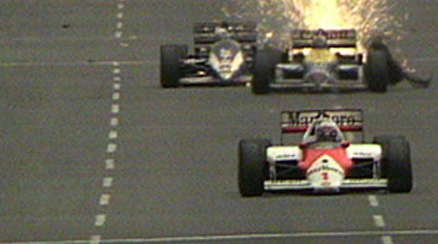
1986 Australian Grand Prix
The 1986 Australian Grand Prix in Adelaide saw Alain Prost and Nigel Mansell battling for the championship. Mansell's tire blowout on the penultimate lap handed the title to Prost, creating a memorable finale.
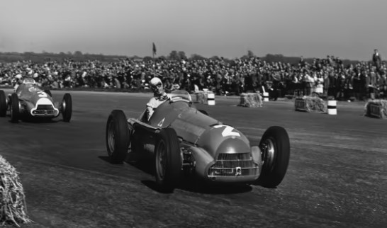
First Formula 1 World Championship
The first Formula 1 World Championship was held in 1950, with Giuseppe Farina winning the inaugural title. The championship marked the beginning of the sport's prestigious legacy and competitive spirit.
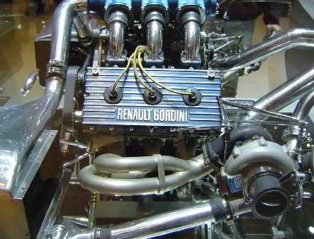
Introduction of Turbocharged Engines
The introduction of turbocharged engines in the late 1970s revolutionized Formula 1. These powerful engines brought new challenges and performance levels, shaping the future of the sport's technical development.
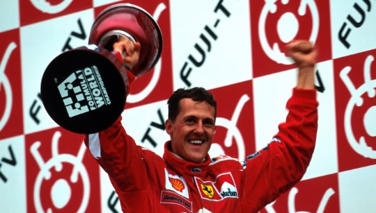
Seventh World Title by Michael Schumacher
Michael Schumacher's seventh World Championship in 2004 solidified his status as the most successful driver in Formula 1 history at that time. His achievements set a new benchmark for excellence in the sport.
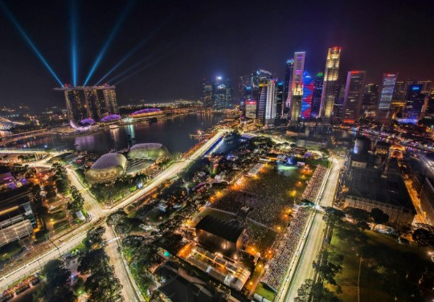
First Night Race in Singapore
The Singapore Grand Prix held in 2008 marked Formula 1's first-ever night race. The spectacular cityscape and bright lights turned the event into an iconic fixture on the F1 calendar.
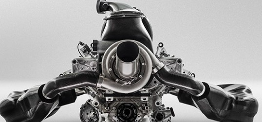
2014 Hybrid Power Units
The introduction of hybrid power units in 2014 brought a new era of technological advancements to Formula 1. These power units combine a turbocharged V6 engine with energy recovery systems, enhancing efficiency and sustainability.
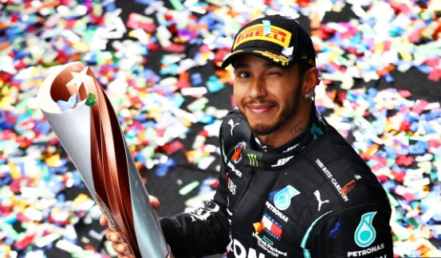
Seventh World Title by Lewis Hamilton
Lewis Hamilton's seventh World Championship in 2020 equaled Michael Schumacher's record. His achievements solidified his status as one of the sport's all-time greats.
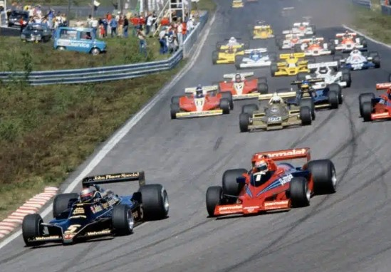
1978 Swedish Grand Prix
The 1978 Swedish Grand Prix at Anderstorp Raceway was the first F1 victory for a turbocharged car. The win by Ronnie Peterson and his Lotus 79 showcased the potential of turbo technology in racing.
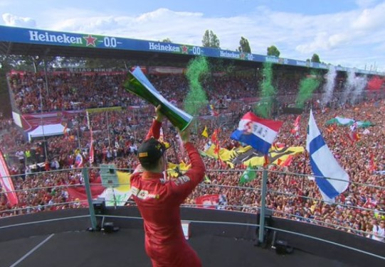
2019 Italian Grand Prix
The 2019 Italian Grand Prix at Monza witnessed Charles Leclerc's maiden F1 victory with Ferrari. Leclerc's triumph sparked celebrations among the passionate Italian fans.
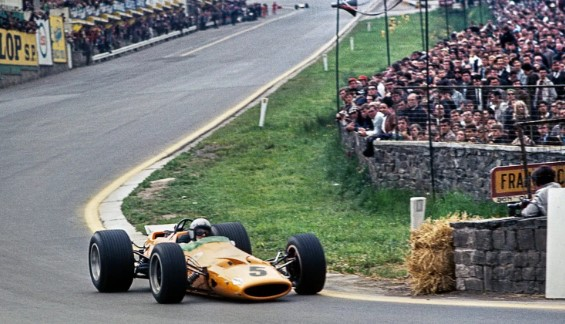
1968 Belgian Grand Prix
The 1968 Belgian Grand Prix at Spa-Francorchamps saw Bruce McLaren secure his first and only F1 victory. The race marked a significant milestone for the McLaren team.